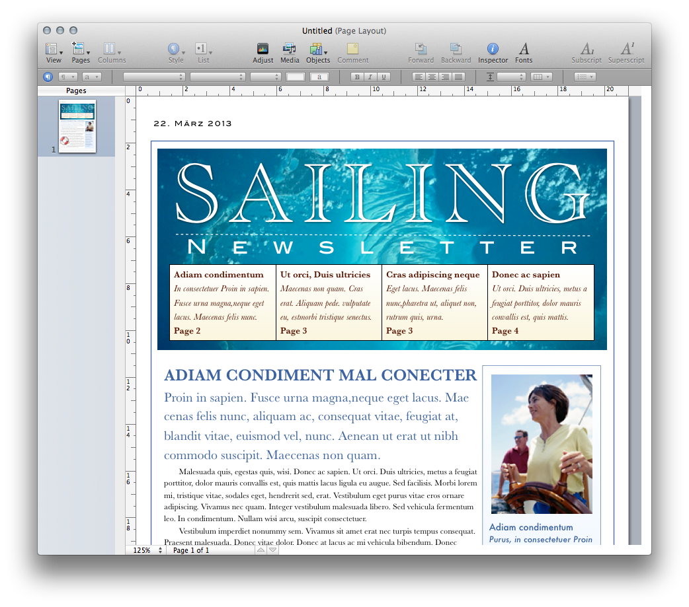
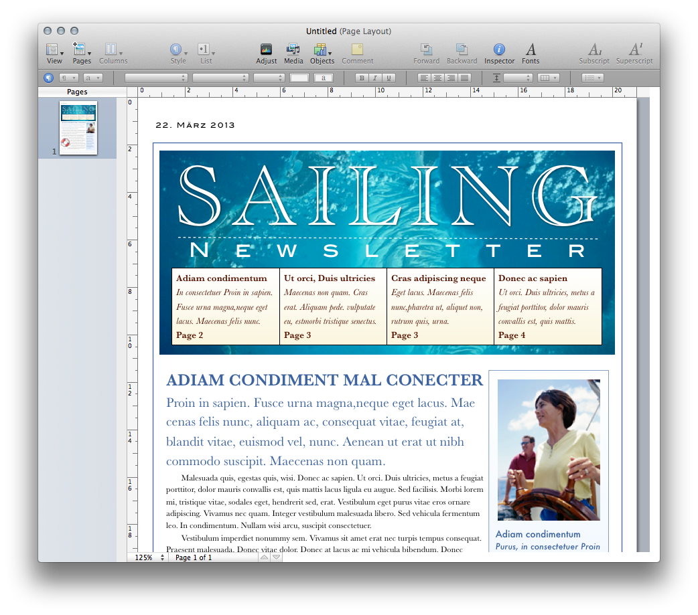
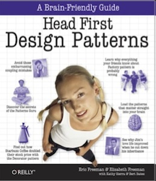
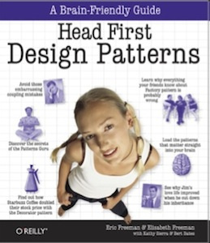

Programming Languages and Design Principles
In the following, we will discuss the development of programming languages as a means to improve their ability to capture the software design at ever increasing abstraction levels. Or, from another point of view, we discuss why advances in programming language technology are driven by the need to make programming languages capable of capturing higher-level designs.
“Designing” with Pseudo-Assembler
Though both programs just print out "123" the second one is easier to read and comprehend. It has a better style:
- Clear structure
- No crossing gotos
- Better names
- Code structure closer to what we want to express.
"Print out i, i smaller than 4“
Hence, the second variant, though functionally identical, is easier to understand, debug, change.
Designing with Structured Programming Languages
In the 1960th programming language support for better structuring of code emerged. Gotos were replaced by loops (while) and conditionals (if/else). Furthermore, procedures were introduced to support user-defined abstractions.
New words, new grammars, new abstractions enable developers to directly express looping/conditional computations, instead of emulating them by jumps. Using a – by then – modern structured programming language, it was no longer possible to write crossing gotos!
In this case, the code is structured, but the procedures are not! It is hard, if not nearly impossible, to maintain or even extend this code.
Group procedures by the functionality they implement and the state they access, e.g. by naming conventions …
Advantages:
- The code is closer to what we want to express.
"main calls gui, gui calls graphic to draw, …“ - The code is easier to understand, debug and change.
Designing with Modular Programming Languages
Modular programming introduced modules, higher-level units/modules introduce higher-level abstractions! One can handle a whole module as if it was its interface. Programming language mechanisms for supporting information hiding: interface hides module internals.
Abstraction enables us to:
- look at the overall structure of the system (architectural thinking).
- zoom in on individual units as needed
- with more or less details
Hence, abstraction is the key to managing complexity.
- Makes the code easier to understand, debug and change.
- Allows structured organization of code.
- Ability to ignore details. Makes the code closer to what we want to express.
Let’s “develop” application families with sophisticated GUIs with uniform look and feel with modular programming…

 

checkbox button, toolbar button, toggle button, radio button …
Modeling variability with modular programming languages appeared complex…
Designing with Object-Oriented Programming Languages
The roots of object-oriented programming languages are in the sixties.
Dahl and Nygaard, Simula 64, 68

Allan Kay, Smalltalk 70 - 80

Object-oriented languages are popular because they make it easier to design software and program at the same time.
They allow us to more directly express high level information about design components abstracting over differences of their variants.
Make it easier to produce the design, and easier to refine it later.
With stronger type checking, they also help the process of detecting design errors.
Result in a more robust design, in essence a better engineered design.
Designing with Functional, Object-Oriented Programming Languages
Programming Languages are not a Panacea
- Accessibility of object-oriented programming drives more complex designs!
- Programming languages are powerful tools, but cannot and will never guarantee good designs.
- Programming always needs to be done properly to result in good code.
- Human creativity remains the main factor.
We need good style to cope with complexity!


 


 ...
...
Help is provided through established practices and techniques, design patterns and principles.
Good style can only be recommended, not enforced!
Eventually style rules will have to be turned into language features to be really effective.